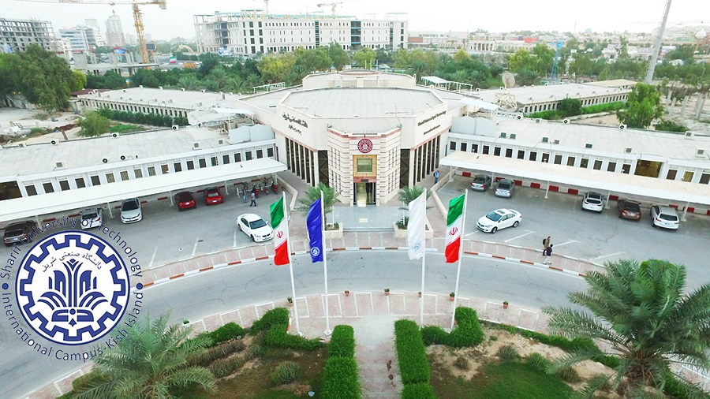

Resume
More of my credentials.
Skills and Tools
More Of My Credentials.
Timeline
Independent Researcher - OpenWorm
Jun 2021
Feb 2021 Studying and researching multidisciplinary areas from Computer, Mechanical, and Electrical Engineering to BioMedical sciences.
Feb 2021 Studying and researching multidisciplinary areas from Computer, Mechanical, and Electrical Engineering to BioMedical sciences.

Sharif University of Technology, International Campus
Sep 2018
Master's in Mechatronics
Courses passed: Advanced Mathematical Engineering, Statics, Dynamics, Electrical Engineering, Signals and Systems, ANN, Advanced Automatic Control.
Courses passed: Advanced Mathematical Engineering, Statics, Dynamics, Electrical Engineering, Signals and Systems, ANN, Advanced Automatic Control.
IELTS (ACADEMIC), English Language Test
Dec 2018
Listening: 7.0, Reading: 6.5, Writing: 6.0, Speaking: 7.0, Overall Band Score: 6.5
Startup Activities
Sep 2018
As part of my independent research activities I try to initiate or mentor start-ups where possible.
Startup Activities
Sep 2018
As part of my independent research activities I try to initiate or mentor start-ups where possible.
Nov 2018 - Dec 2018
IELTS (ACADEMIC), English Language Test
Listening: 7.0, Reading: 6.5, Writing: 6.0, Speaking: 7.0, Overall Band Score: 6.5
Sep 2018 - Jun 2021
Startup Activities
As part of my independent research activities I try to initiate or mentor start-ups where possible.
Apr 2016 - Sep 2018
Data Engineer, Sadad Informatics Corp. -- Melli Bank Iran
Research and develop the best big data and cloud solutions matching data architecture of the organization.
Feb 2015 - Mar 2018
Senior Contributor, Volunteer Researcher and Developer, OpenWorm Project
ChannelWorm: The aim of the ChannelWorm is to integrate information and tools related to modeling ion channels in C. elegans.